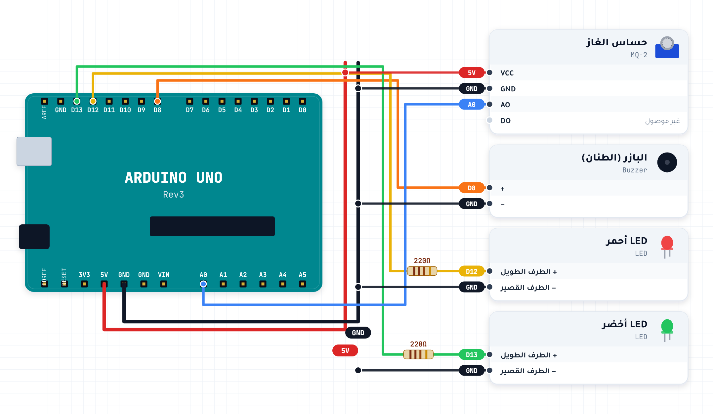

▶فيديو الشرح
نظام أمان منزلي: إنذار صوتي وضوء أحمر عند تسرب الغاز أو الدخان.
1المكونات
ARDUINO UNOboardحساس الغازMQ-2البازر (الطنان)BuzzerLED أحمرLEDLED أخضرLEDأسلاك توصيلJumper Wiresلوحة تجاربBreadboard
2مخطط التوصيل

اضغط على المخطط لتكبيره · نسخة SVG عالية الدقة
| القطعة | الطرف | يوصل إلى |
|---|---|---|
| حساس الغاز | VCC | 5V |
| حساس الغاز | GND | GND |
| حساس الغاز | AO | A0 |
| حساس الغاز | DO | غير موصول |
| البازر (الطنان) | + | D8 |
| البازر (الطنان) | − | GND |
| LED أحمر | + الطرف الطويل | D12 عبر مقاومة 220Ω |
| LED أحمر | − الطرف القصير | GND |
| LED أخضر | + الطرف الطويل | D13 عبر مقاومة 220Ω |
| LED أخضر | − الطرف القصير | GND |
3الكود
لا يحتاج هذا المشروع إلى أي مكتبة إضافية.
/* المشروع 8: كاشف الغازات والحرائق المبدئي (MQ-2) كتاب: 38 مشروع في شهر — لؤي النصري (@robotlouay) التوصيل: MQ-2: VCC → 5V GND → GND AO → A0 (DO غير موصول) Buzzer (+) → Pin 8 LED أحمر ← 220Ω ← Pin 12 LED أخضر ← 220Ω ← Pin 13 */ const int GAS_PIN = A0; const int BUZZER_PIN = 8; const int RED_LED = 12; const int GREEN_LED = 13; const int MARGIN = 150; // الارتفاع عن قراءة الهواء النقي الذي يُعتبر خطراً int baseline = 0; // قراءة الهواء النقي (تُحسب عند التشغيل) void setup() { Serial.begin(9600); pinMode(BUZZER_PIN, OUTPUT); pinMode(RED_LED, OUTPUT); pinMode(GREEN_LED, OUTPUT); // فترة الإحماء: نومض الأخضر لمدة 60 ثانية Serial.println("Warming up 60 s..."); for (int i = 0; i < 60; i++) { digitalWrite(GREEN_LED, i % 2); delay(1000); } // معايرة: متوسط القراءات في الهواء النقي long sum = 0; for (int i = 0; i < 50; i++) { sum += analogRead(GAS_PIN); delay(20); } baseline = sum / 50; Serial.print("Baseline = "); Serial.println(baseline); } void loop() { int value = analogRead(GAS_PIN); Serial.print("Gas: "); Serial.println(value); if (value > baseline + MARGIN) { // خطر! digitalWrite(GREEN_LED, LOW); digitalWrite(RED_LED, HIGH); tone(BUZZER_PIN, 2000); delay(150); digitalWrite(RED_LED, LOW); noTone(BUZZER_PIN); delay(100); } else { // الجو آمن digitalWrite(GREEN_LED, HIGH); digitalWrite(RED_LED, LOW); noTone(BUZZER_PIN); delay(300); } }
4كيف يعمل؟
- إحماء الحساس 60 ثانية ثم قياس الهواء النقي
- قراءة A0 باستمرار
- ارتفاع كبير عن القراءة المرجعية = خطر
- البازر + الأحمر عند الخطر، الأخضر عند الأمان
⚠ قبل توصيل الكهرباء: راجع كل سلك مع الجدول أعلاه، وتأكد من عدم وجود تماس بين 5V و GND. اختر اللوحة والمنفذ الصحيحين من قائمة Tools في Arduino IDE.